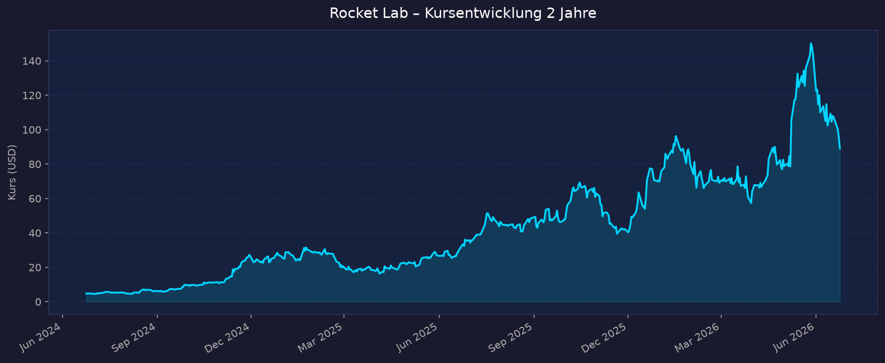
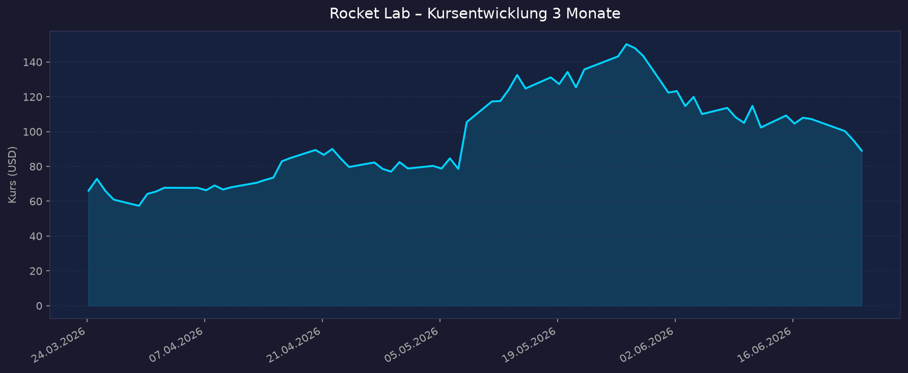

Einordnung: Direkter Weltraum-Pure-Play — Raketen (Electron, künftig Neutron) + Space Systems (Satelliten, Komponenten, Konstellationen). Aktuell defizitär, daher KGV n/a. Bewertung über P/S, Umsatzwachstum, Cash-Runway, Verwässerung und Auftragsbestand.
📈 1. Kursentwicklung
Aktueller Kurs: ~88,97–95,12 USD (Schlusskurs 23.06.2026: 95,12 USD; Intraday 24.06. um ~89 USD) | Trend: volatil nach Rücksetzer vom Allzeithoch
Chart – 2 Jahre

Chart – 3 Monate

| Zeitraum | Kurs Start | Kurs Ende | Veränderung |
|---|---|---|---|
| 2 Jahre | 4,83 USD (24.06.2024) | ~89,06 USD | +1.744 % |
| 3 Monate | 66,07 USD | ~89,06 USD | +34,8 % |
| 52-Wochen-Hoch | — | 151,00 USD (27.05.2026) | — |
| 52-Wochen-Tief | — | 31,78 USD | — |
Einordnung: Extreme Outperformance über 2 Jahre (Vervielfachung von <5 auf ~90 USD). Nach dem Allzeithoch von 151 USD am 27.05.2026 folgte ein deutlicher Rücksetzer (~–40 % vom Hoch) — ausgelöst durch Gewinnmitnahmen nach dem SpaceX-Börsengang (SPCX) am 12.06.2026, der den gesamten Sektor zunächst befeuert und bei kleineren Pure-Plays anschließend Korrekturen ausgelöst hat. TradingView (interaktiv): https://www.tradingview.com/symbols/NASDAQ-RKLB/
💹 2. KGV-Entwicklung (Kurs-Gewinn-Verhältnis)
Aktuelles KGV: n/a — defizitär (Rocket Lab schreibt operative Verluste; rechnerisches P/E ≈ –304, ökonomisch ohne Aussage)
| Zeitraum | KGV | Einordnung |
|---|---|---|
| Aktuell | n/a — defizitär | Nettoverlust FY2025 –198,2 Mio. USD, EPS –0,37 USD |
| vor 3 Monaten | n/a — defizitär | — |
| vor 12 Monaten | n/a — defizitär | — |
| vor 24 Monaten | n/a — defizitär | — |
Bewertung: Als defizitärer Pure-Play ist das KGV nicht aussagekräftig. Maßgeblich sind P/S, Umsatzdynamik und der Weg zur GAAP-Profitabilität. Die Verluste verengen sich relativ zum Umsatz (steigende Bruttomarge, GAAP-Bruttomarge Q1 2026: 38,2 %, non-GAAP 43 %), absolut weitet sich der Nettoverlust aber noch leicht aus (FY2025 –198,2 Mio. vs. FY2024).
💰 3. Sales Multiple (Kurs-Umsatz-Verhältnis / P/S)
Aktuelles P/S-Verhältnis: ~76x (Marktkap. ~51,5 Mrd. USD / TTM-Umsatz ~679,6 Mio. USD). Auf dem Allzeithoch (Marktkap. ~83 Mrd. USD, Ende Mai) lag das P/S bei ~125–138x.
| Zeitraum | P/S Ratio | Einordnung |
|---|---|---|
| Aktuell (TTM) | ~45,6–76x* | je nach Kurs/Umsatzbasis — sehr hoch |
| Allzeithoch Mai 2026 | ~125–138x | extreme Bewertung am Hochpunkt |
| Ende 2025 | ~67,4x | — |
| 3-Jahres-Durchschnitt | ~27,5x | historischer Mittelwert |
| 5-Jahres-Durchschnitt | ~27,9x | historischer Mittelwert |
* Datenquellen weichen ab: financecharts nennt TTM-P/S ~45,6; aus Marktkap. 51,5 Mrd. / TTM-Umsatz 679,6 Mio. ergibt sich rechnerisch ~76x. Beide deutlich über dem historischen Schnitt (~27,5x).
Trend: Stark steigend / überdehnt. Das P/S liegt selbst nach dem Rücksetzer ungefähr beim 2- bis 3-Fachen des eigenen 3-Jahres-Schnitts. Ein Großteil des künftigen Umsatzwachstums (v. a. Neutron) ist bereits eingepreist — entsprechend hoch ist das Bewertungsrisiko bei Enttäuschungen.
📊 4. Handelsvolumen (Trading Volume)
| Zeitraum | Ø Tagesvolumen | Auffälligkeiten |
|---|---|---|
| 3-Monats-Durchschnitt | ~26,9 Mio. Aktien | erhöht durch Rally + Korrektur |
| 2-Jahres-Durchschnitt | ~20,6 Mio. Aktien | — |
| Volumen-Peak (2J) | ~121,0 Mio. Aktien | 13.11.2024 (Kurs-Ausbruch nach starkem Q3-Bericht) |
Volumentrend: Deutlich steigendes Interesse. Das 3-Monats-Volumen liegt rund 30 % über dem 2-Jahres-Schnitt — Folge der Q1-Rally, des SpaceX-IPOs und der bevorstehenden Nasdaq-100-Aufnahme (22.06.2026), die passive Fonds-Nachfrage erzeugt.
🏦 5. Insider Trades (letzte 2 Jahre)
| Datum | Name | Funktion | Kauf/Verkauf | Anzahl Aktien | Wert (USD) |
|---|---|---|---|---|---|
| 15.11.2025 | Peter Beck | CEO/Director | Erwerb (RSU-Grant) | 132.426 | 0 (Vergütung) |
| 24.11.2025 | Peter Beck | CEO/Director | Verkauf | n/v | ~766.569 (≈40,02–41,35 USD) |
| 15./16.12.2025 | Equatorial Trust (Beck) | CEO-nah (10b5-1) | Verkauf | u. a. 317.989 | ø ~64,31 USD/Aktie |
3-Monats-Überblick: Netto-Verkäufe durch den CEO, jedoch überwiegend über vorab terminierte Rule-10b5-1-Pläne (automatisierte Verkäufe, geringere Signalwirkung). 2-Jahres-Überblick: Wiederkehrende, geplante Verkäufe des Gründers/CEO bei gleichzeitigen RSU-Zuteilungen — typisches Muster bei wachstumsstarken Tech-Gründern. Keine auffälligen Insider-Käufe zu freien Marktpreisen.
Quelle: SEC Edgar / OpenInsider / Investing.com / StockTitan
🩳 6. Short-Positionen
Aktuelle Short Quote: ~4,9 % des Streubesitzes (Float), Stand 23.04.2026 (≈24,9 Mio. Aktien short, gestiegen von ~21,4 Mio.)
| Zeitraum | Short Interest | Veränderung |
|---|---|---|
| Aktuell (Apr. 2026) | ~4,9 % | ↑ (von 21,4 auf 24,9 Mio. Aktien) |
| frühere Perioden | nicht verfügbar | — |
Einschätzung: Mit ~4,9 % moderat — nicht außergewöhnlich hoch für einen volatilen, hoch bewerteten Wachstumswert. Der leichte Anstieg deutet auf wachsende Skepsis einzelner Marktteilnehmer gegenüber der hohen Bewertung hin, ist aber kein klassisches Short-Squeeze-Setup.
🗞️ 7. Aktuelle Nachrichten
| Datum | Quelle | Nachricht | Relevanz |
|---|---|---|---|
| 22.06.2026 | Nasdaq/Barchart | Aufnahme in den Nasdaq-100-Index → höhere Sichtbarkeit, passive Nachfrage | Hoch |
| ~15.06.2026 | KeyBanc | Hochstufung auf Overweight, Kursziel 135 USD (Treiber: Neutron-Timeline, Defense-Aufträge) | Hoch |
| 12.06.2026 | Markt | SpaceX-IPO (SPCX) ~1,75 Bio. USD befeuert Sektor, löst danach Gewinnmitnahmen bei Pure-Plays aus | Hoch |
| 27.05.2026 | Markt | Neues Allzeithoch 151 USD, danach ~40 % Rücksetzer | Hoch |
| 07.05.2026 | CNBC/Investing | Q1 2026: Rekordumsatz 200,3 Mio. USD (+63,5 %), Backlog 2,2 Mrd. — Aktie +34 % (bester Tag) | Hoch |
| Q1 2026 | Unternehmen | Größter Vertrag der Firmengeschichte (Neutron + Electron, vertraulicher Kunde, bis 2029) | Hoch |
| Jan. 2026 | Unternehmen | Neutron Stage-1-Tank-Riss bei Drucktest → Erstflug auf Q4 2026 verschoben | Hoch |
| 2025 | SDA | 816 Mio. USD Space-Development-Agency-Vertrag (18 Satelliten) stützt Backlog | Mittel |
| 19.06.2026 | 24/7 Wall St. | Kursprognose-Artikel: RKLB-Ziel 150 USD (spekulativ) | Gering |
Sentiment: Überwiegend positiv, aber zunehmend zweigeteilt — starke operative Dynamik (Rekordumsatz, Rekord-Backlog, Defense-Aufträge, Index-Aufnahme) gegen Bewertungs- und Ausführungsrisiken (Neutron-Verzögerung, sehr hohes P/S, Verwässerung).
📋 8. Letzte 3 Quartalsberichte
Q1 2026 (gemeldet 07.05.2026)
| Kennzahl | Ist | Erwartung | Abweichung |
|---|---|---|---|
| Umsatz (Revenue) | 200,3 Mio. USD (+63,5 % YoY, +12 % QoQ) | ~190–193 Mio. USD | Beat |
| EPS (GAAP) | –0,07 USD | –0,08 USD | +0,01 (Beat) |
| Bruttomarge (GAAP / non-GAAP) | 38,2 % / 43,0 % | — | Rekord |
| Backlog | 2,2 Mrd. USD (+108 % YoY, +20 % QoQ) | — | Rekord |
Segmente: Space Systems 136,7 Mio. (+57,2 %), Launch Services 63,7 Mio. (+78,9 %). Guidance: Q2 2026 Umsatz 225–240 Mio. USD (über Konsens ~207,5 Mio.). Kursreaktion: +34 % am Earnings-Tag (bester Handelstag der Firmengeschichte).
Q4 2025 (gemeldet 26.02.2026)
| Kennzahl | Ist | Erwartung | Abweichung |
|---|---|---|---|
| Umsatz (Revenue) | 179,65 Mio. USD (+35,7 % YoY) | 177,99 Mio. USD | Beat (+0,9 %) |
| EPS (GAAP) | –0,09 USD | –0,10 USD | +0,01 (Beat) |
| Nettomarge | negativ (FY2025 Nettoverlust –198,2 Mio.) | — | — |
| Free Cashflow | nicht verfügbar | — | — |
Guidance: Fortgesetztes starkes Wachstum; Backlog auf 1,85 Mrd. USD (+73 % YoY). Highlights: 7 Launches in Q4 (Rekord), 21 Electron/HASTE-Missionen FY2025 mit 100 % Erfolgsquote. Kursreaktion: nicht eindeutig verfügbar (gemischtes Bild — starke Zahlen vs. anhaltende Verluste).
Q3 2025 (gemeldet 10.11.2025)
| Kennzahl | Ist | Erwartung | Abweichung |
|---|---|---|---|
| Umsatz (Revenue) | 155 Mio. USD (Rekord) | nicht verfügbar | — |
| EPS (GAAP) | negativ | nicht verfügbar | — |
| Bruttomarge (GAAP) | 37 % (Rekord) | — | — |
| Free Cashflow | nicht verfügbar | — | — |
Guidance: Anhaltend zweistelliges Wachstum, Aufbau Space Systems / Vorbereitung Neutron. Kursreaktion: nicht verfügbar
🌍 9. Marktkontext & Wettbewerb
Markt / Branche: Kommerzielle Raumfahrt / Launch + Space Systems. Die globale Weltraumwirtschaft wird bis 2030 auf ~769 Mrd. USD geschätzt. Wachstumstreiber: Satellitenkonstellationen (Kommunikation, Erdbeobachtung), nationale Sicherheit/Defense, zunehmender Bedarf an Kleinst- bis Mittelklasse-Trägerraketen.
| Wettbewerber | Stärke | Schwäche |
|---|---|---|
| SpaceX (SPCX) | Dominanz bei Launch (Pseudo-Monopol), Starship/Starlink, ~1,75 Bio. USD Bewertung nach IPO 12.06.2026 | Bewertungs-Hype; bindet aber Sektor-Kapital, das Pure-Plays fehlt |
| Firefly Aerospace | Vertikal integriert (Launch, Imaging, Missile-Defense-Software, Lunar Lander); Umsatz 2025 160 Mio., Guidance 2026 ~435 Mio. (+170 %) | Höheres Ausführungsrisiko, junger Track-Record |
| Relativity Space (Terran R) | 3D-Druck-Fertigung, Mittelklasse-Rakete | Noch kein Orbitalflug; Erstflug-Risiko |
| Astra (Rocket 4) | — | Mehrfache Fehlschläge, schwache Bilanz |
| Northrop Grumman / Boeing / Lockheed (indirekt) | Profitable Defense-/Aerospace-Konzerne mit Raumfahrt-Segmenten | Raumfahrt nur Teilgeschäft, kein Pure-Play-Hebel |
Branchentrends: (1) Mehrere Neuentwicklungen wollen 2026 ihren Orbital-Erstflug wagen (Neutron, Terran R, Eclipse, Rocket 4) — SpaceX' Quasi-Monopol gerät unter Druck. (2) Defense/National-Security wird zum wichtigsten Umsatztreiber (SDA-Aufträge). (3) Konsolidierung der Bewertungen nach dem SpaceX-IPO. Marktposition: Rocket Lab gilt als glaubwürdigster Herausforderer von SpaceX im Launch-Segment — am weitesten kommerziell fortgeschritten nach SpaceX (50+ Electron-Starts, 100 % Erfolgsquote zuletzt). Mit Neutron stößt es in die margenstärkere Mittelklasse vor; Space Systems (Satelliten/Komponenten) ist bereits das größere Segment und stabilisiert den Umsatz. Risiken aus dem Marktumfeld: Neutron-Erstflug auf Q4 2026 verschoben (Tank-Riss) — jede weitere Verzögerung beschädigt die Investment-These; sehr hohe Bewertung relativ zur Branche; Abhängigkeit von Großaufträgen (Defense) und politischen Budgets; Verwässerung durch Kapitalmaßnahmen.
🧮 Bewertungs-Score
| Kriterium | Score (1–10) | Begründung |
|---|---|---|
| Bewertung | 3,0 | P/S ~45–76x liegt 2–3x über dem 3-Jahres-Schnitt (~27,5x); KGV n/a (defizitär). Viel Zukunft eingepreist, geringer Sicherheitspuffer. |
| Wachstum & Momentum | 9,0 | Umsatz +63,5 % YoY (Q1 2026), Backlog +108 % auf 2,2 Mrd.; Q2-Guidance über Konsens; +34 % Earnings-Reaktion, Nasdaq-100-Aufnahme. |
| Bilanz & Sicherheit | 6,0 | Solide Liquidität (Cash 1,21 Mrd., inkl. Wertpapiere 1,48 Mrd.) deckt mehrjährigen Cash-Burn. Aber: deutliche Verwässerung (ATM +450 Mio. USD, Wandelanleihen → +23 Mio. Aktien; Aktienzahl ~576 Mio.). |
| Qualität & Wettbewerbsposition | 7,5 | Technologisch führender Pure-Play hinter SpaceX, 100 % Electron-Erfolgsquote zuletzt, vertikal integriert (Launch + Space Systems), starker Defense-Auftragsbestand. |
| Chancen vs. Risiken | 6,0 | Katalysatoren (Neutron-Erstflug, Defense-Cadence, Index-Effekt) gegen Risiken (Neutron-Verzögerung, Überbewertung, Verwässerung) — chancenreich, aber spekulativ. |
Gewichteter Gesamtscore: ~6,1 / 10 (Gewichtung: Wachstum 25 %, Qualität/Wettbewerb 25 %, Bewertung 20 %, Bilanz 15 %, Chancen/Risiken 15 %) → Operativ exzellent, aber durch die extreme Bewertung gebremst. Klassischer „Great company, demanding price"-Fall.
5-Jahres-Szenario (Horizont 2031)
Basis: aktueller Kurs ~89 USD, keine Dividende. Annahmen je Szenario zur Umsatz- und Margenentwicklung sowie zum unterstellten P/S-Multiple.
| Szenario | Annahmen | Kurs 2031 | Gesamtrendite ggü. heute |
|---|---|---|---|
| Bär | Neutron verzögert/Fehlstart, Umsatzwachstum verlangsamt sich, Multiple-Kompression auf historischen Schnitt (~15–20x), starke Verwässerung | ~40–50 USD | –45 % bis –55 % |
| Base | Neutron fliegt 2026/27 erfolgreich, Umsatz wächst auf ~2,5–3 Mrd. USD bis 2031, GAAP-Profitabilität erreicht, Multiple normalisiert sich (~10–14x P/S) | ~120–150 USD | +35 % bis +70 % |
| Bull | Neutron wird zweite kommerzielle Mittelklasse-Rakete neben SpaceX, Umsatz >4 Mrd. USD, hohe Margen, Premium-Multiple bleibt | ~230–300 USD | +160 % bis +235 % |
Hinweis: keine Dividende — Gesamtrendite = reine Kursrendite. Szenarien sind grobe Bandbreiten, kein Kursziel.
📝 Gesamteinschätzung
Stärken:
- Glaubwürdigster börsennotierter SpaceX-Herausforderer; technologischer Vorsprung als etablierter Launch-Anbieter (50+ Electron-Starts, zuletzt 100 % Erfolgsquote).
- Explosives, qualitativ hochwertiges Wachstum: Umsatz +63,5 % YoY in Q1 2026, Backlog 2,2 Mrd. USD (+108 %) mit starker Defense-Komponente.
- Vertikal integriert: Space Systems (Satelliten/Komponenten) ist bereits das größere, planbarere Segment — reduziert Abhängigkeit vom reinen Launch-Geschäft.
- Solide Liquidität (~1,48 Mrd. USD inkl. Wertpapiere) finanziert den mehrjährigen Neutron-Hochlauf; mehrere Katalysatoren (Neutron-Erstflug, Nasdaq-100-Aufnahme, Analysten-Upgrades).
Risiken:
- Extreme Bewertung: P/S ~45–76x vs. historischer Schnitt ~27,5x — viel Zukunft eingepreist, hohes Korrekturrisiko (bereits ~40 % unter Allzeithoch).
- Neutron-Ausführungsrisiko: Erstflug nach Tank-Riss auf Q4 2026 verschoben; weitere Verzögerungen würden die Wachstums-These und das Vertrauen belasten.
- Defizitär: anhaltende Nettoverluste (FY2025 –198,2 Mio.), GAAP-Profitabilität noch nicht erreicht; KGV nicht anwendbar.
- Verwässerung: aktive Kapitalmaßnahmen (ATM +450 Mio. USD, Wandelanleihen-Konvertierung) erhöhen die Aktienzahl (~576 Mio.) und drücken den Wert je Aktie.
- Sektor-Volatilität nach dem SpaceX-IPO; Abhängigkeit von Großaufträgen und Verteidigungsbudgets.
Fazit: Rocket Lab ist operativ einer der stärksten Pure-Plays im Weltraumsektor — Rekordumsatz, Rekord-Backlog und ein klarer technologischer Vorsprung sprechen für die langfristige These. Die Aktie ist jedoch nach der Vervielfachung sehr ambitioniert bewertet (P/S weit über dem historischen Schnitt) und defizitär, sodass viel von der Neutron-Story und künftigem Wachstum bereits im Kurs steckt. Chancen (Neutron-Erfolg, Defense-Cadence) und Risiken (Verzögerung, Verwässerung, Bewertung) halten sich die Waage — ein hochinteressanter, aber spekulativer Wert mit ausgeprägter Volatilität.
Datenquellen: Yahoo Finance · stockanalysis.com · Macrotrends · financecharts.com · companiesmarketcap.com · SEC Edgar (8-K/10-Q) · OpenInsider/StockTitan · Finviz/MarketBeat/Benzinga · CNBC · Investing.com · The Motley Fool · Payloadspace · Tema ETFs · yfinance (Charts) Datenstand 2026-06-24. Einzelne Bewertungskennzahlen variieren je Quelle (Kurs/Marktkap. tagesabhängig).
Rein informative Auswertung öffentlich zugänglicher Daten. Keine Kauf- oder Verkaufsempfehlung.